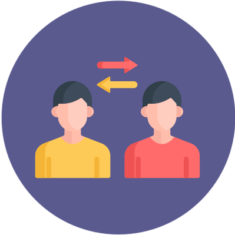

<ion-header class="juegos-header">
  <ion-toolbar class="header-toolbar">
    <ion-buttons slot="start">
      <ion-back-button class="menu-btn"></ion-back-button>
    </ion-buttons>
    <ion-title>Regalar cromo</ion-title>
  </ion-toolbar>
</ion-header>

<ion-content class="intercambiarcromos-content">

  
  
  <ion-button (click)=RegalarCromo() class="intercambiar-btn" shape="round">
    Elige a quién quieres regalar este cromo
    <ion-icon style="color:  rgb(255, 255, 255);" name="albums" item-left></ion-icon>
  </ion-button>
  <!--Se define la estética del cromo según el nivel del propio cromo-->
  <ion-item *ngIf="cromo">
    <ion-card name="cromo">
      
    </ion-card>

  </ion-item>

</ion-content>